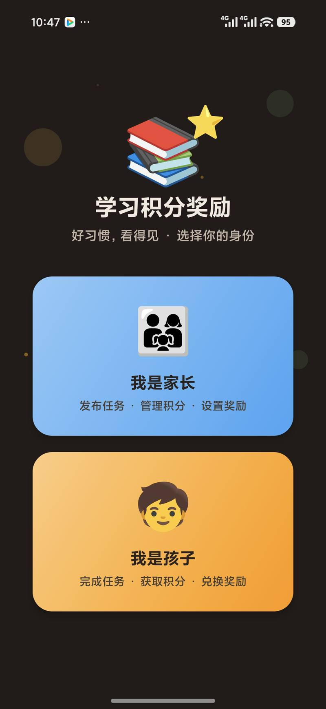
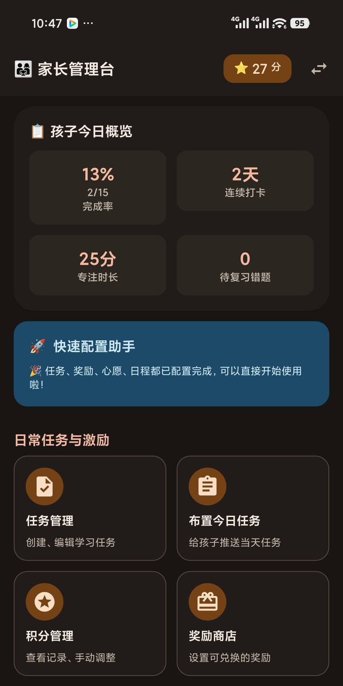
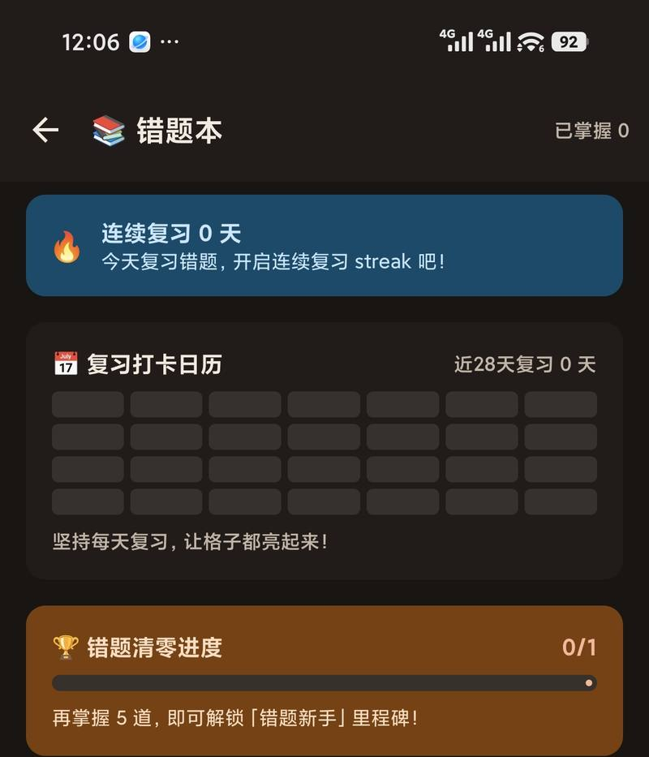

家长与孩子
共享的学习伙伴
基于 Kotlin Multiplatform 打造的 Android & iOS 双平台家庭学习管理应用：任务打卡、家长审批、番茄专注、错题复习与积分奖励，一套原生代码，全家共同使用。


应用一览
真机截图，横向滑动浏览各主要页面。


为真实家庭学习场景设计的六件大事
每一项功能都经过真机签核与自动化回归验证。
任务与审批
孩子打卡完成任务，积分仅在家长审批通过后写入账本。Append-only 账本设计保证防伪与公正——每一笔积分都可审计、可对称冲抵。
专注训练
集成番茄钟（呼吸引导、科学休息循环、屏幕常亮与跨进程恢复）与舒尔特方格专注力训练器，让"坐得住"变成可量化的习惯。
错题复习
基于艾宾浩斯间隔复习算法与"主动回忆"流程：先想后翻、做对加分、到期提醒，把每道错题跟踪到真正掌握为止。
奖励机制
每日抽奖、宠物照料、心愿存钱罐积分兑换与每周学习周报——正向激励层层递进，且所有奖励发放均经防重入校验，双击不双发。
家庭同步与配对
支持单设备家长/孩子角色即时切换，也可两台设备轻松配对；家长配置可导出/导入，提供完整的数据备份与恢复流程。
跨平台与双语
一套 Kotlin Multiplatform + Compose Multiplatform 原生代码同时构建 Android 与 iOS；界面支持中英双语运行中即时切换，Material Design 3 视觉语言深浅色自适应。
学习数据留在你自己的设备上
HStudy 的业务数据（任务、积分账本、错题、心愿）全部存储于设备本地数据库。分析统计基于 Google Analytics for Firebase，仅记录匿名 / 伪匿名的功能使用频率，绝不收集姓名、任务内容、错题文本或任何自由文本内容。
- 事件仅含功能标识与枚举值，无自由文本上报
- 文案展示串与数据库写入严格隔离（存储边界自动化闸门逐版本回归）
- 可在「家长设置」中一键关闭数据分享，随时生效
- 开源可审计：所有采集点均可在源码中检索验证
示意界面。真实开关位于 App 的家长设置页，关闭后不再初始化分析 SDK。
快速安装与构建
三分钟上手：直接安装签名 Release APK、体验 iOS 模拟器包，或从源码构建。
- 1
前往 Releases 页面下载最新的打开发布页
HStudy-vX.Y.Z-signed.apk - 2
在系统提示允许时，为浏览器/文件管理器开启「安装未知来源应用」权限（一次性授权即可）。
- 3
安装 APK。老版本 v2 用户可直接覆盖安装、数据无损升级（签名密钥轮换已保证升级连续性）。
-
首次启动进入引导：选择家长角色并设置孩子昵称，即可开始配置任务与奖励。
当前 iOS 交付物为未签名的模拟器构建包（本账号无 Apple 开发者证书，TestFlight / App Store 上架为后续计划）。
- 1
从 Releases 下载
HStudy-vX.Y.Z-ios-simulator-unsigned.zip（需 Apple 硅 Mac）。 - 2
解压得到
HStudy.app，安装到 iOS 模拟器：xcrun simctl install booted HStudy.app。 - 3
在模拟器中启动，与 Android 端功能同源（Compose Multiplatform 共享同一业务代码）。
git clone https://github.com/yaohehe/hstudy.git
cd hstudy
# Android Debug 构建
./gradlew :composeApp:assembleDebug
# Android Release 构建（本地签名需配置 RELEASE_KEYSTORE_* 环境变量）
./gradlew :composeApp:assembleRelease
# 全量单元测试（325+ 用例，含积分不变量回归套件）
./gradlew :composeApp:testDebugUnitTest
# iOS 模拟器框架构建（macOS）
./gradlew :composeApp:packForXcodeCI 会在 Linux/macOS runner 上分别执行 Android 与 iOS 构建闸门；合并主分支前必须双绿。
开源，且可持续
HStudy 完全开源：从积分审批状态机、间隔复习算法到 Material 3 主题体系，全部代码可审阅、可复用、可自建。发布链路由 GitHub Actions 自动化：双平台 CI 双绿 → 合并 → 签名 Release → 资产校验。